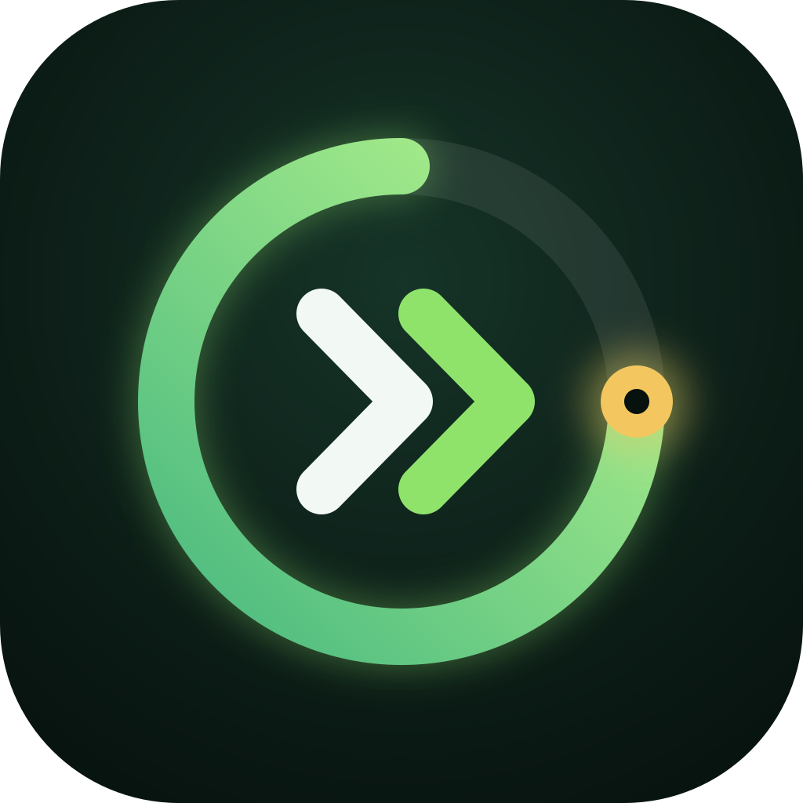

inklusive kurzem Zusatzlauf

Mein Laufplan
Stand 01.10.2026 · Ziel Berlin 2028
–Tage
Nächster Lauf
–Im Plan ansehen →Seit 7. September · Daten bis 01.10.2026
Deine Entwicklung
Laufen und Clubbesuche im Zeitverlauf.
9 Laufaufzeichnungen
8 reguläre Läufe · nach Distanz gewichtet
min/km · schneller liegt oben
So verändert sich deine Pace
0:22 min/km schneller · KW 38 → KW 39
Pace, Puls und Schrittfrequenz zusammen betrachtet
| Zeitraum | Ø Pace | Ø Puls | Intensität nach Tredict | Ø Schrittfrequenz |
|---|---|---|---|---|
| KW 37 | 9:08 /km | 128 bpm | überwiegend niedrig100,0 % niedrig · 0,0 % moderat · 0,0 % hoch | 139,0 Schritte/min |
| KW 38 | 8:23 /km | 133 bpm | überwiegend niedrig92,2 % niedrig · 7,8 % moderat · 0,0 % hoch | 142,9 Schritte/min |
| KW 39 | 8:00 /km | 134 bpm | überwiegend niedrig98,4 % niedrig · 1,6 % moderat · 0,0 % hoch | 144,4 Schritte/min |
| KW 40 · bisher | 7:31 /km | 141 bpm | überwiegend niedrig81,3 % niedrig · 18,7 % moderat · 0,0 % hoch | 149,8 Schritte/min |
Aktuelle lockere Pulsorientierung: 125–139 bpm, ohne Mindestpuls. Die Intensitätsanteile stammen aus Tredict; deren bpm-Grenzen sind hier nicht dokumentiert. Sie sind keine bestätigte persönliche Zone 2. Ein Durchschnittspuls zeigt nicht, wie lange du in einem Pulsbereich gelaufen bist.
Puls, Schrittfrequenz und Intensitätsanteile sind nach aufgezeichneter Dauer gewichtet, aus denselben regulären Läufen wie die Pace. Fehlende Messwerte bleiben offen. Gehanteile sind enthalten; der kurze Zusatzlauf zählt hier nicht mit. Die Schrittfrequenz betrachten wir im Zusammenhang mit Pace und Gehanteilen, ohne feste Sollzahl.
Kilometer
Gelaufene Kilometer
+1,67 km · KW 38 → KW 39
Minuten
Zeit beim Laufen
+10,8 Min. · KW 38 → KW 39
Separat vom Laufen
Deine Clubbesuche
Pro Kalenderwoche
3:42 h gesamt
2:36 h gesamt
3:09 h gesamt
Besuche
Gains
0 Besuche · KW 38 → KW 39
Besuche
Sweat
0 Besuche · KW 38 → KW 39
Besuche
Conditioning
0 Besuche · KW 38 → KW 39
min/km · schneller liegt oben
So verändert sich deine Pace
Noch kein abgeschlossener Monatsvergleich.
Pace, Puls und Schrittfrequenz zusammen betrachtet
| Zeitraum | Ø Pace | Ø Puls | Intensität nach Tredict | Ø Schrittfrequenz |
|---|---|---|---|---|
| Sep | 8:10 /km | 134 bpm | überwiegend niedrig92,5 % niedrig · 7,5 % moderat · 0,0 % hoch | 144,4 Schritte/min |
| Okt · bisher | – | – | keine Zonenwerte | – |
Aktuelle lockere Pulsorientierung: 125–139 bpm, ohne Mindestpuls. Die Intensitätsanteile stammen aus Tredict; deren bpm-Grenzen sind hier nicht dokumentiert. Sie sind keine bestätigte persönliche Zone 2. Ein Durchschnittspuls zeigt nicht, wie lange du in einem Pulsbereich gelaufen bist.
Puls, Schrittfrequenz und Intensitätsanteile sind nach aufgezeichneter Dauer gewichtet, aus denselben regulären Läufen wie die Pace. Fehlende Messwerte bleiben offen. Gehanteile sind enthalten; der kurze Zusatzlauf zählt hier nicht mit. Die Schrittfrequenz betrachten wir im Zusammenhang mit Pace und Gehanteilen, ohne feste Sollzahl.
Kilometer
Gelaufene Kilometer
Noch kein abgeschlossener Monatsvergleich.
Minuten
Zeit beim Laufen
Noch kein abgeschlossener Monatsvergleich.
Separat vom Laufen
Deine Clubbesuche
Pro Kalendermonat
3:42 h gesamt
2:36 h gesamt
3:09 h gesamt
Besuche
Gains
Noch kein abgeschlossener Monatsvergleich.
Besuche
Sweat
Noch kein abgeschlossener Monatsvergleich.
Besuche
Conditioning
Noch kein abgeschlossener Monatsvergleich.
Pace = gesamte aufgezeichnete Dauer ÷ Distanz der regulären Läufe, einschließlich Gehanteilen. Kilometer und Zeit enthalten den kurzen Zusatzlauf. Laufanteile aus Conditioning ohne Distanz sind nicht enthalten. September beginnt hier am 07.09.; laufende Zeiträume sind unvollständig. Vergleiche beziehen sich nur auf abgeschlossene Zeiträume. Schnellere Pace allein beweist keine Fitnesssteigerung; Strecke, Puls und Anstrengung spielen mit hinein. Null Besuche bedeutet: bisher keine Aufzeichnung vorhanden.
Plan & Ziele
- Ziel 10 km beim Lauf gegen Krebs am 31.10., Checkpoint 22.10.
- Locker Gesprächstempo, Puls 125–139 bpm
- Rhythmus ab November Di/Mi plus optional Sonntag
- Regel höchstens zwei harte Reize pro Woche, nichts nachholen
Deine Laufwochen
Die aktuelle Woche ist geöffnet. Alle Läufe liegen als Workout auf der Uhr.
W45,47 km geschafft · Freitag nur bei frischen Beinen
Mittwoch 5,47 km, Donnerstag Conditioning absolviert. Freitag Sweat am Morgen, Lauf um 17 Uhr nur bei frischen Beinen und höchstens 3 km.
Dienstag29.09.2026
Lauf · erledigt
Absolviert · in den Fortschrittsgrafiken enthalten.
Mittwoch30.09.2026
Lauf · 5,47 km erledigt
Absolviert · in den Fortschrittsgrafiken enthalten.
Freitag · 17:00 Uhr02.10.2026
Optionaler gemeinsamer Lauf · max. 3 km
Nur wenn die Beine nach Sweat frisch sind, höchstens 20–25 Minuten sehr locker. Sonst Spaziergang.
W5Längster Lauf 6–6,5 km
Neuer längster Lauf am Dienstag, Mittwoch kurz. Ziel: 10 km beim Lauf gegen Krebs am 31.10.
Dienstag06.10.2026
Längster Lauf · 6–6,5 km
Locker im Gesprächstempo.
Mittwoch07.10.2026
Kurzer sehr lockerer Lauf · 3–4 km
Locker im Gesprächstempo.
W6Urlaub zu Hause · langer Lauf am Freitag
Urlaubswoche: drei Läufe, der lange Lauf am Freitag ersetzt Sweat. Samstag packen, Sonntag Anreise nach Dänemark.
Dienstag13.10.2026
Lockerer Lauf · 5 km
Locker im Gesprächstempo.
Mittwoch14.10.2026
Kurzer sehr lockerer Lauf · 4 km
Locker im Gesprächstempo.
Freitag · statt Sweat16.10.2026
Langer Lauf · 7–7,5 km
Locker im Gesprächstempo.
W7Dänemark · Checkpoint 9 kmCheckpoint
Vier Läufe statt täglich: Muskeln, Sehnen und Knie brauchen Pausentage. An freien Tagen Spaziergänge oder Rad. Donnerstag 22.10. Checkpoint für die 10 km.
Montag19.10.2026
Lockerer Lauf · 4 km · optional
Optional · nur bei guter Erholung, nichts nachholen.
Dienstag20.10.2026
6 km mit 2 km Renntempo
3 km locker, 2 km im geplanten Renntempo (145–155 bpm), 1 km locker. Test für das Renngefühl.
Donnerstag22.10.2026
Checkpoint · langer Lauf 8,5–9 km
Entscheidungslauf: gelingen 8,5–9 km locker und der Folgetag ist gut, geht es am 31.10. auf die 10 km, sonst auf die 6 km.
Samstag24.10.2026
Lockerer Lauf · 5 km
Locker im Gesprächstempo.
W8Rennwoche · 10 km am SamstagRennwoche
Entlastung vor dem Rennen: Dienstag letzte Tempoprobe, Mittwoch und Freitag frei. Samstag 31.10. um 12:15 Uhr 10 km.
Dienstag27.10.2026
5 km mit 10 Min. Renntempo
2 km locker, 10 Minuten im Renntempo, Rest locker. Danach bis zum Rennen nur noch frisch werden.
Samstag · 12:15 Uhr31.10.2026
Lauf gegen Krebs · 10 km
Rennen der Elternhilfe Leipzig. Taktik: km 1–3 ruhig (138–146 bpm), km 4–7 angenehm fordernd (145–155), km 8–10 freigeben. Ziel 1:15 h. Details im Reiter Renntaktik.
W9Erholung nach dem Rennen
Erholungswoche: Dienstag frei, dann locker wieder einsteigen.
Mittwoch04.11.2026
Erster Lauf nach dem Rennen · 30 Min.
Locker im Gesprächstempo.
Sonntag08.11.2026
Optionaler lockerer Lauf · 30 Min.
Optional · nur bei guter Erholung, nichts nachholen.
W10Basis halten
Dienstag10.11.2026
Längerer lockerer Lauf · 45 Min.
Locker im Gesprächstempo.
Mittwoch11.11.2026
Kurzer lockerer Lauf · 30 Min.
Locker im Gesprächstempo.
Sonntag15.11.2026
Optionaler lockerer Lauf · 30 Min.
Optional · nur bei guter Erholung, nichts nachholen.
W11Basis ausbauen
Dienstag17.11.2026
Längerer lockerer Lauf · 50 Min.
Locker im Gesprächstempo.
Mittwoch18.11.2026
Kurzer lockerer Lauf · 30 Min.
Locker im Gesprächstempo.
Sonntag22.11.2026
Optionaler lockerer Lauf · 35 Min.
Optional · nur bei guter Erholung, nichts nachholen.
W12Umfang halten
Dienstag24.11.2026
Längerer lockerer Lauf · 50 Min.
Locker im Gesprächstempo.
Mittwoch25.11.2026
Kurzer lockerer Lauf · 30 Min.
Locker im Gesprächstempo.
Sonntag29.11.2026
Optionaler lockerer Lauf · 30 Min.
Optional · nur bei guter Erholung, nichts nachholen.
W13Entlastung
Dienstag01.12.2026
Längerer lockerer Lauf · 40 Min.
Locker im Gesprächstempo.
Mittwoch02.12.2026
Kurzer lockerer Lauf · 25 Min.
Locker im Gesprächstempo.
W14Wieder aufbauen
Dienstag08.12.2026
Längerer lockerer Lauf · 55 Min.
Locker im Gesprächstempo.
Mittwoch09.12.2026
Kurzer lockerer Lauf · 30 Min.
Locker im Gesprächstempo.
Sonntag13.12.2026
Optionaler lockerer Lauf · 35 Min.
Optional · nur bei guter Erholung, nichts nachholen.
W15Längster Lauf ca. 65 Min.
Dienstag15.12.2026
Längerer lockerer Lauf · 65 Min.
Locker im Gesprächstempo.
Mittwoch16.12.2026
Kurzer lockerer Lauf · 30 Min.
Locker im Gesprächstempo.
Sonntag20.12.2026
Optionaler lockerer Lauf · 40 Min.
Optional · nur bei guter Erholung, nichts nachholen.
W16Feiertage
Dienstag22.12.2026
Längerer lockerer Lauf · 45 Min.
Locker im Gesprächstempo.
Mittwoch23.12.2026
Kurzer lockerer Lauf · 30 Min.
Locker im Gesprächstempo.
Sonntag27.12.2026
Optionaler lockerer Lauf · 40 Min.
Optional · nur bei guter Erholung, nichts nachholen.
W17Jahresabschluss
Dienstag29.12.2026
Längerer lockerer Lauf · 70 Min.
Locker im Gesprächstempo.
Mittwoch30.12.2026
Kurzer lockerer Lauf · 30 Min.
Locker im Gesprächstempo.
Ziele & Termine · Planungsstand 30.09.2026
Dein Weg bis Berlin 2028
2026 · erste 10 km31. Oktober: Lauf gegen Krebs
Elternhilfe Leipzig, Start 12:15 Uhr. Ziel 1:15 h. Checkpoint 22.10.: sonst 6 km. Taktik im Reiter Renntaktik.
2027 · Aufbaujahr18. April: 10-km-Wettkampf
Leipzig. Erster Halbmarathon im Herbst, Wunschfenster Oktober; genauer HM-Termin offen.
2028 · MarathonjahrBerlin-Marathon
September als Wunschzeitraum; Termin und Anmeldung offen. Davor Halbmarathon in Leipzig am 09.04. vorgesehen.
Nächster Plancheck: 22.10. (Checkpoint 9 km). Nach dem Rennen zwei lockere Läufe pro Woche plus ein optionaler Lauf bis Jahresende. Alle Wochen bleiben anpassbar.
Vorgemerkte Veranstaltungen & Meilensteine
| Datum / Zeitraum | Veranstaltung | Ziel | Terminstatus |
|---|---|---|---|
| 18.04.2027 | Leipzig Marathon – 10 km10 km | HauptzielErster 10-km-Wettkampf | Veranstaltungstag bestätigt (Stand 28.09.)Keine Anmeldung dokumentiert |
| 12.05.2027 | Leipziger Silberseelauf10 km | OptionalOptionaler weiterer 10-km-Lauf | Voraussichtlich / PlanungsfensterKeine Anmeldung dokumentiert |
| Juni 2027 | schnelleStelle.de Firmenlauf LeipzigKurzer gemeinsamer Spaßlauf | OptionalKurzer gemeinsamer Spaßlauf | Termin nicht bestätigtKeine Anmeldung dokumentiert |
| 12.06.2027 | Himmelswegelauf – Himmelsscheibenlauf10 km | OptionalZusätzlicher 10er oder Alternative zum Firmenlauf | Veranstaltungstag bestätigt (Stand 28.09.)Keine Anmeldung dokumentiert |
| 27.08.2027 | Sparkassen-Tauchscher Stadtlauf10 km | OptionalOptionaler 10-km-Formtest vor dem Herbst-HM | Veranstaltungstag bestätigt (Stand 28.09.)Keine Anmeldung dokumentiert |
| Oktober 2027 | LEIPZIG RUN – LEIPZIG21k21,1 km | HauptzielErster Halbmarathon | Voraussichtlich / PlanungsfensterKeine Anmeldung dokumentiert |
| 09.04.2028 | Leipzig Marathon – Halbmarathon21,1 km | HauptzielZweiter Halbmarathon | Veranstaltungstag bestätigt (Stand 28.09.)Keine Anmeldung dokumentiert |
| Mai 2028 | Leipziger Silberseelauf20 km | OptionalOptionale Ausdauerveranstaltung zwischen Frühjahr und Marathonvorbereitung | Voraussichtlich / PlanungsfensterKeine Anmeldung dokumentiert |
| 17.06.2028 · Vorschlag | Himmelswegelauf – Halbmarathon21,1 km | OptionalOptionaler Halbmarathon zur Standortbestimmung | Termin nicht bestätigtKeine Anmeldung dokumentiert |
| Juni 2028 | Firmenlauf LeipzigKurzer Spaßlauf | OptionalKurzer Spaßlauf | Termin nicht bestätigtKeine Anmeldung dokumentiert |
| August 2028 | Sparkassen-Tauchscher Stadtlauf10 km | OptionalOptionaler Formtest in der Marathonvorbereitung | Termin nicht bestätigtKeine Anmeldung dokumentiert |
| Juli 2028 bis September 2028 | Lange TrainingsläufeMarathonspezifischer Aufbau | HauptzielMarathonspezifischer Aufbau | Voraussichtlich / Planungsfenster |
| September 2028 | BMW Berlin-Marathon42,195 km | HauptzielErster Marathon | Termin nicht bestätigtKeine Anmeldung dokumentiert |
Veranstaltungsangaben aus der gespeicherten Recherche vom 28.09.2026. Bestätigter Veranstaltungstag bedeutet keine bestätigte Teilnahme oder Anmeldung. Prüffenster für die Berlin-Anmeldung: September–November 2027, bislang keine offizielle Frist. Die Trainingsplanung reicht vorerst bis 31.12.2026.
Renntaktik · Stand 30.09.2026
Lauf gegen Krebs · Elternhilfe Leipzig
Samstag, 31.10.2026 · Start 12:15 Uhr · 10 km
Ziel
1:15 hDas entspricht 7:30/km. Am 30.09. bist du 5,47 km in 7:28/km locker gelaufen, das Tempo passt also. Die Aufgabe ist, es über 10 km zu halten.
Bonus: 1:10–1:12 h nur, wenn die Renntempo-Abschnitte am 20.10. und 27.10. leicht gehen.
Ort
Testfeld der Sportwissenschaftlichen Fakultät, Jahnallee 59, LeipzigAusweichoption: 6 km um 11:00 Uhr.
Tempo- und Pulsplan
In drei Abschnitten laufen
km 1–3138–146 bpm7:40–7:50/km
Locker, ganze Sätze möglich. Bewusst langsamer als die Menge starten.
Uhr: 142 ±4 bpmkm 4–7145–155 bpmca. 7:25/km
Angenehm fordernd, nur noch kurze Sätze. Gleichmäßig bleiben.
Uhr: 150 ±5 bpmkm 8–10151–165 bpm7:20/km oder schneller
Freigeben, wenn es sich gut anfühlt. Schrittweise steigern, Endspurt erst auf dem letzten Kilometer.
Uhr: 158 ±7 bpmGrundlage: HFmax 185 (von dir gemessen) und die Tredict-Zonen „leicht“ bis 146 und „moderat“ 147–165 bpm. Ziel-Durchschnitt etwa 148–153 bpm. Über 75 Minuten steigt der Puls bei gleichem Tempo ohnehin um 5–10 Schläge.
Zwischenzeiten für 1:15 h
| km | Pace | Gesamt |
|---|---|---|
| 1 | 7:45 | 7:45 |
| 2 | 7:45 | 15:30 |
| 3 | 7:40 | 23:10 |
| 4 | 7:25 | 30:35 |
| 5 | 7:25 | 38:00 |
| 6 | 7:25 | 45:25 |
| 7 | 7:25 | 52:50 |
| 8 | 7:20 | 1:00:10 |
| 9 | 7:20 | 1:07:30 |
| 10 | 7:20 | 1:14:50 |
Regeln im Rennen
- Puls vor km 7 dauerhaft über 155 bpm: Tempo rausnehmen, bis er wieder im Bereich ist.
- Die zweite Hälfte gleich schnell oder schneller als die erste laufen. Ein zu schneller Start kostet am Ende mehr, als er vorne bringt.
- Der Puls ist eine Leitplanke, das Gefühl entscheidet. Am Renntag liegt der Puls durch Aufregung oft 3–5 Schläge höher.
- An der Verpflegung kurz gehen und trinken ist erlaubt und kostet kaum Zeit.
- Knieschmerz, der den Laufstil verändert: gehen, nicht durchziehen.
Renntag
- ca. 09:00Letzte größere Mahlzeit, bekannt und leicht verdaulich. Danach nur noch Kleinigkeiten und Wasser.
- ca. 11:15Am Start ankommen, Startunterlagen und Toilette ohne Hektik.
- ca. 11:5010 Minuten sehr locker einlaufen, danach 2–3 lockere Schwünge in den Beinen.
- 12:10Im hinteren Drittel des Feldes einordnen. Uhr-Workout starten, Einlaufschritt läuft.
- 12:15Start: Runden-Taste drücken, damit der Schritt „km 1–3“ beginnt.
Auf der Garmin-Uhr
Das Renn-Workout liegt in Tredict und wird von dort an Garmin übertragen. Tredict schickt jeweils die nächsten sieben Trainingstage, das Rennen erscheint also ab etwa 24.10. auf der Venu 4. Aufbau: offener Einlaufschritt, dann 3 km mit 142 ±4, 4 km mit 150 ±5 und 3 km mit 158 ±7 bpm. Die Kilometer misst die Uhr per GPS, sie können von den Streckenschildern leicht abweichen.
Weg zum Rennen
Checkpoint Donnerstag 22.10. in Dänemark: 8,5–9 km locker ohne Knieschmerz und mit gutem Folgetag, dann 10 km. Wenn nicht, auf die 6 km wechseln. Beides ist ein gutes Ergebnis.
Di 20.10.6 km mit 2 km im Renntempo (145–155 bpm)
Erste Probe für das Gefühl von km 4–7.
Do 22.10.8,5–9 km locker
Checkpoint für die Entscheidung 10 oder 6 km.
Di 27.10.5 km mit 10 Min. Renntempo
Letzte Tempoprobe, danach nur noch frisch werden.
Fr 30.10.frei
Kein Sweat. Beine hochlegen, normal essen und trinken.
Weitere Rennen, zum Beispiel der erste Halbmarathon 2027, bekommen hier später eine eigene Taktik.